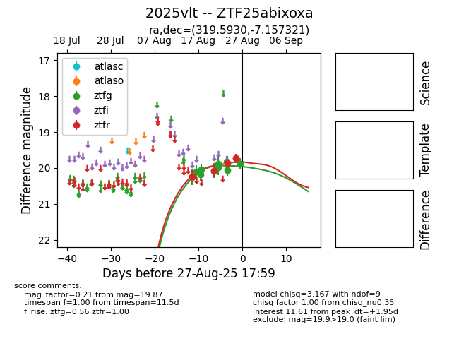

Target 2025vlt at 2025-08-27 17:59, see:
FINK: fink-portal.org/ZTF25abixoxa
Lasair: lasair-ztf.lsst.ac.uk/objects/ZTF25abixoxa
ALeRCE: alerce.online/object/ZTF25abixoxa
TNS: wis-tns.org/object/2025vlt
YSE: ziggy.ucolick.org/yse/transient_detail/2025vlt
alt names
ZTF25abixoxa (ztf,fink)
2025vlt (tns,yse)
coordinates:
equatorial (ra, dec) = (319.5930,-7.15732)
galactic (l, b) = (44.2884,-35.80028)
photometry
last ztfg=19.87, ztfr=19.73
10 ztfg, 4 ztfr detections
